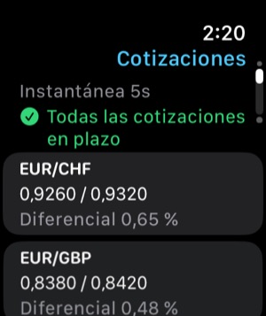

Funciona sin conexión
Tablas, historial y cálculos se guardan en el dispositivo. FXDesk abre y calcula en modo avión.
Para casas de cambio, cajeros y operadores de divisas
FXDesk convierte los precios de tu pizarra en una matriz de tipos, tipos cruzados y rutas A → B → C → A ordenadas, con cada diferencial, comisión y hora a la vista.
Funciona por completo en tu iPhone, sin internet, y nunca presenta un resultado teórico como un beneficio garantizado.

Cada cifra muestra de dónde viene, su antigüedad y qué lado de la cotización se usó.
Tablas, historial y cálculos se guardan en el dispositivo. FXDesk abre y calcula en modo avión.
Evalúa cada ciclo A → B → C → A de tu tabla, en ambos sentidos, y los ordena por resultado neto estimado.
Una instantánea de solo lectura de tu mostrador, la antigüedad de las cotizaciones y tu último resultado en el Apple Watch.
Modo de cifras grandes, dígitos monoespaciados y búsqueda de divisas.
Introduce compra y venta por par. La matriz muestra cada sentido y «—» donde no hay cotización.
Vender la divisa base usa la compra; comprarla, 1 ÷ venta. Las cotizaciones inversas intercambian lados correctamente. Nunca multiplica tipos medios para fingir beneficios.
Compara una cotización directa con el tipo cruzado sintético vía una tercera divisa, con ambos diferenciales y detección de mercado cruzado.
Añade comisión por paso y una tarifa fija. Bruto y neto estimado lado a lado, paso a paso.
Una tabla por mostrador o sucursal. Duplica, renombra, exporta e importa; nunca se mezclan cotizaciones.
Cada cálculo se guarda con las cotizaciones exactas, horas, redondeo y comisiones utilizadas.
Sin cuenta, sin analíticas, sin seguimiento. Tus cotizaciones se quedan en el dispositivo salvo que las exportes.
Tres cálculos gratis y luego una única compra dentro de la app. Sin suscripción.
Registra compras y ventas; caja neta del día, posición por divisa y margen estimado. Exporta CSV.
Convierte un iPad o iPhone en una pizarra a pantalla completa «Compramos / Vendemos».
Escribe los precios de compra y venta de tu pizarra o empieza con el mostrador de ejemplo.
Elige divisa inicial e importe, o un ciclo concreto de tres divisas.
FXDesk aplica el lado correcto en cada paso y ordena los ciclos posibles.
Comprueba diferenciales, comisiones, redondeo, antigüedad de las cotizaciones y supuestos.
Un tipo indicativo o de referencia no es un precio ejecutable. FXDesk calcula con las cotizaciones que introduces; no puede saber si un mostrador las respetará, si tiene los billetes o si aplica límites.
Diferenciales, comisiones, redondeo a billetes y el tiempo entre pasos suelen eliminar las pequeñas diferencias teóricas. Por eso FXDesk separa bruto y neto estimado y marca como teóricas las cotizaciones desactualizadas, solo medias o de ejemplo.
FXDesk es una calculadora. No ejecuta operaciones ni cambios, no ofrece asesoramiento financiero y no garantiza beneficios.
Cotizaciones, perfiles, historial y cálculos se guardan en el iPhone y funcionan sin conexión. Cada cotización conserva su hora y origen; las que superan tu umbral se marcan y nunca se tratan como actuales sin avisar.


La app del reloj muestra una instantánea de solo lectura del mostrador activo: cotizaciones y diferenciales, antigüedad, cotizaciones desactualizadas y el último cálculo. Conserva la última instantánea cuando el iPhone está lejos.
Gratis
$29.99
Compra única dentro de la app (precio en EE. UU.; el App Store fija los precios locales).
Un resultado triangular o cruzado obtenido con éxito. Entradas no válidas, errores, consultar o editar cotizaciones y reabrir el historial nunca cuentan, y un cálculo idéntico no se cuenta dos veces.
Sí. Cotizaciones, perfiles, historial y cálculos están en tu iPhone. Solo los tipos de referencia opcionales del BCE y la compra en el App Store necesitan conexión.
No. FXDesk calcula con tus cotizaciones. Los tipos opcionales del BCE se publican una vez por día hábil, son informativos y nunca se usan en cálculos.
Convertir A → B → C → A a través de tres cotizaciones. Si el importe final supera el inicial tras los diferenciales, el ciclo muestra una diferencia teórica.
No. El resultado depende de las cotizaciones. Disponibilidad, billetes, límites, comisiones y tiempos pueden anularlo. FXDesk marca los resultados como indicativos o teóricos, nunca ejecutables.
Al vender recibes la compra, más baja; al comprar pagas la venta, más alta. Cada paso paga el diferencial, así que la mayoría de ciclos acaban algo por debajo del importe inicial.
Tres cálculos completados. Los errores y entradas no válidas no cuentan.
No. Es una compra única no consumible que puedes restaurar.
Una instantánea de solo lectura: cotizaciones y diferenciales, antigüedad, desactualizadas y el último cálculo.
No. No opera, no cambia dinero ni se conecta a bancos o brókeres.
Tus perfiles y cotizaciones, el historial, los ajustes y el contador de cálculos gratuitos. No se sube nada; no hay cuenta.